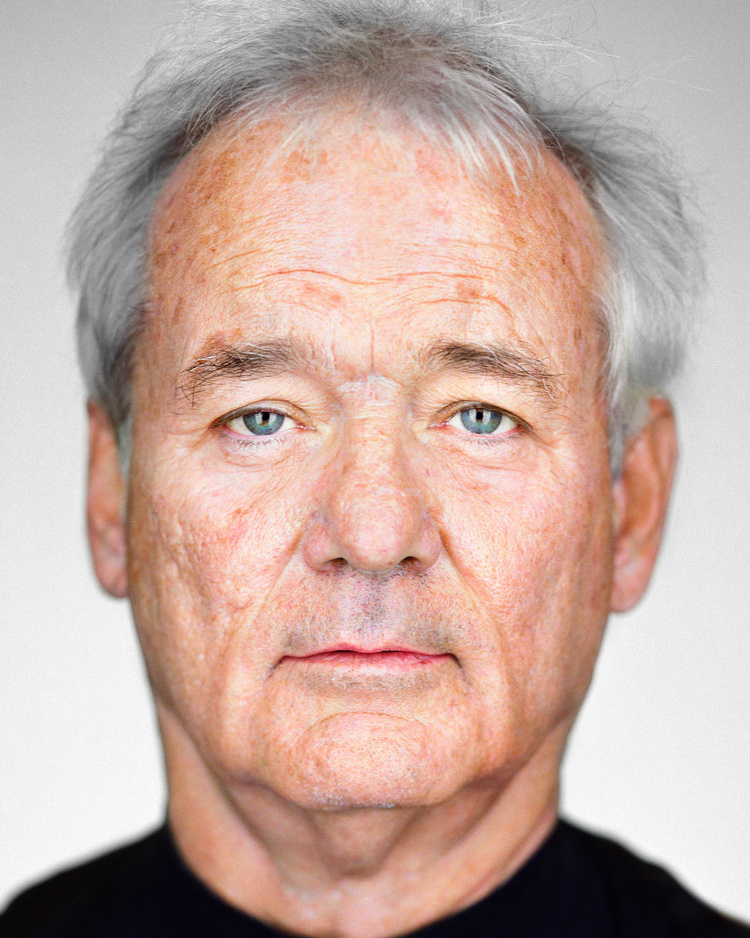
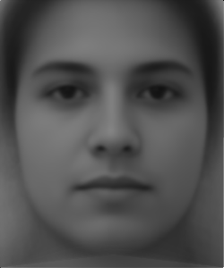

Note: Most of the gifs play only once, so it may help to reload the page to view them again.
Evan:
Bill Murray:
Halfway:
Bill Murray -> Evan morph

Average Face
Average Female Face
Average Male Face
To the average shape:
Average face to Evan's geometry:
Evan extrapolated from the male average face:
White Female Average Face

Morphing Just the Shape
Morphing Just the Appearance
Morphing Both